En vivo
Antes de llegar
Espacio de trabajo y documentos
Un espacio de trabajo privado en el CRGS durante los tres días en campus, con equipo de cómputo, impresora, conexión a los sistemas institucionales y café.
Traslados y vuelos
Hotel–campus cada día; aeropuerto el miércoles
Llegadas del domingo: Juan Mauricio 9:18, José Ángel 14:10, Marcela 14:25. Regresos del miércoles: José Ángel 14:59, Marcela 16:05, Juan Mauricio 19:48 (sale de la UDEM a las 17:00). Los traslados los coordina la UDEM.
Documentos
Autoestudio LDG 2025 y anexos
Siguen disponibles en la carpeta compartida que ya tienen; en el espacio de trabajo habrá una copia digital y las evidencias organizadas por categoría.
Día 1
.01Domingo 1 de noviembre
Hotel Safi Royal Luxury Valle. Tarde de apertura.
| Hora | Actividad | Lugar |
|---|---|---|
| 18:00 – 18:30 | Acto protocolario de presentaciónAutoridades de la UDEM y comité evaluador. Inauguración de la segunda fase y repaso de la agenda. El director del programa entrega a la coordinadora la relación de estudiantes activos; el comité elige de ahí a quienes entrevistará el lunes. | SAFI Valle OrienteSalón por confirmar |
| 18:30 – 20:00 | Entrevista a profundidad con el director del programaParticipan únicamente los pares evaluadores y el responsable del programa. | SAFI Valle Oriente |
| 20:00 – 20:30 | Reunión privada del comité evaluador | SAFI Valle Oriente |
Día 2
.02Lunes 2 de noviembre
CRGS, UDEM. Talleres, estudiantes de los tres niveles y egresados.
| Hora | Actividad | Lugar |
|---|---|---|
| 8:00 – 8:30 | Traslado del comité a la UDEM | SAFI Valle Oriente → UDEM |
| 8:30 – 8:50 | Recepción y espacio de trabajo del comité | Sala de juntas · 3.er pisoCR N3 |
| 8:50 – 9:50 | Profesores responsables de los talleres de diseñoIncluye el recorrido por los laboratorios y talleres del programa. | CR60202A |
| 10:00 – 11:20 | Estudiantes del nivel básico1.º a 3.er semestre. | CR60202A |
| 11:30 – 12:50 | Estudiantes del nivel intermedio4.º a 6.º semestre. | CR60202A |
| 13:10 – 14:40 | Comida | Restaurante Casa Grande |
| 15:15 – 16:30 | Estudiantes del nivel terminal7.º y 8.º semestre. | Sala de juntas · 3.er piso |
| 17:00 – 18:30 | EgresadosEntre uno y cinco años de egreso. | Sala de juntas · 3.er piso |
| 18:30 | Traslado al hotel y revisión de documentos del comité | SAFI Valle Oriente |
Día 3
.03Martes 3 de noviembre
CRGS, UDEM. Profesores, autoridades, áreas de apoyo y recorrido por la exposición de trabajos.
| Hora | Actividad | Lugar |
|---|---|---|
| 8:00 – 8:30 | Traslado del comité a la UDEM | SAFI Valle Oriente → UDEM |
| 8:40 – 9:50 | Profesores de tiempo completo | CR60202A |
| 10:00 – 11:20 | Coordinadora del comité con autoridades de la UDEMVicerrectoría, Decanato de la Escuela de Arte y Diseño y Dirección del Departamento. | CR60202A |
| 11:30 – 12:50 | Profesores de teoría y de asignatura | Salón 223Taller sustentable |
| 13:00 – 14:30 | Comida en el campusMenú de Nectar Works. | Sala de juntas · 3.er piso |
| 14:40 – 15:40 | Funcionarios de áreas de apoyoComité escolar, Investigación, Servicio Social, Acompañamiento estudiantil, Vinculación, Biblioteca y Ayudas financieras. | Sala de juntas · 3.er piso |
| 15:50 – 17:50 | Recorrido por la exposición de trabajosMuestra de proyectos de los niveles básico, intermedio y terminal, con sus autores presentes para conversar con el comité. | Exposición · 5.º piso |
| 17:50 | Traslado al hotel y revisión de documentos del comité | SAFI Valle Oriente |
Día 4
.04Miércoles 4 de noviembre
CRGS, UDEM. Cierre de la visita y traslado al aeropuerto.
| Hora | Actividad | Lugar |
|---|---|---|
| 8:00 – 8:20 | Traslado del comité a la UDEM | SAFI Valle Oriente → UDEM |
| 8:30 – 9:30 | Revisión y llenado del formato por parte del comité | Sala de juntas · 3.er piso |
| 9:40 – 10:30 | Retroalimentación del comité al responsable del programa | Sala de juntas · 3.er piso |
| 10:40 – 11:00 | Acto protocolario de clausuraCierre de la segunda fase del proceso de acreditación. | Sala de juntas · 3.er piso |
| 11:00 | Traslado del comité al aeropuertoSegún el vuelo de cada quien: 14:59, 16:05 y 19:48; la última salida de la UDEM es a las 17:00. | Coordina DEAC |
Martes 3 · 15:50 – 17:50 · 5.º piso
.01–.18Exposición de trabajos
Dieciocho proyectos agrupados por los tres niveles del plan de estudios. Cada pieza lleva una ficha con el propósito formativo de la materia, los aprendizajes demostrados y un código QR con la evidencia completa.
Filtra por eje curricular del Mapa LDG; el punto de color identifica el eje de cada proyecto.
Los 18 proyectos sobre el plan de estudios
Cada cuadro es un proyecto, colocado en el semestre de la materia; el color indica su eje curricular. Los tres niveles siguen la progresión del plan y el comité entrevista a los estudiantes de cada uno el lunes.
.1Nivel básico · 1.º a 3.er semestre4 proyectos
- .01Bitácora de la formaEstudio de Introducción a la Composición Visual · 1.º
- .10Las reglas de la formaEstudio de Fundamentos del Diseño Gráfico · 2.º
- .02La VictoriaFotografía Profesional de Objeto · 3.º
- .11SombreritoFotografía Profesional de Objeto · 3.º
Sin proyectos de este eje en el nivel.
.2Nivel intermedio · 4.º a 6.º semestre8 proyectos
- .03Scoop & ClipEmpaque y Marca · 4.º
- .04Hello AmsterdamEstudio de Diseño Informativo · 4.º
- .12Portada 360° UDEMDiseño de Publicaciones · 4.º
- .13Madrid MetroEstudio de Diseño Informativo · 4.º
- .05ParallaxMercadotecnia y Comunicación de Marca · 5.º
- .14Catálogo de proveedoresGestión y Operación de Proyectos de Diseño · 5.º
- .06La jugada maestraEstudio de Diseño de Interacción · 6.º
- .15Ojo de TigreEstudio de Diseño de Interacción · 6.º
Sin proyectos de este eje en el nivel.
.3Nivel terminal · 7.º a 9.º semestre6 proyectos
- .07ArtefactoEstudio de Diseño de Servicios · 7.º
- .16Taller MDillonEstudio de Diseño de Servicios · 7.º
- .08SynergyEstudio Integral de Diseño · 8.º
- .17Back DoorEstudio Integral de Diseño · 8.º
- .09La Máquina del SouvenirProyecto de Evaluación Final (PEF) · 9.º
- .18RegenProyecto de Evaluación Final (PEF) · 9.º
Sin proyectos de este eje en el nivel.
Sedes
Sedes
Dos sedes para toda la visita.
Lunes a miércoles
Centro Roberto Garza Sada de Arte, Arquitectura y Diseño
Universidad de Monterrey · Av. Ignacio Morones Prieto 4500 Pte., San Pedro Garza García, N. L. Aula CR60202A, sala de juntas del 3.er piso (CR N3), salón 223 y exposición en el 5.º piso.
Equipo
Quiénes los reciben
Cualquier ajuste a la agenda durante la visita pasa por el director del programa.
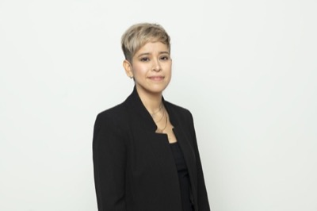
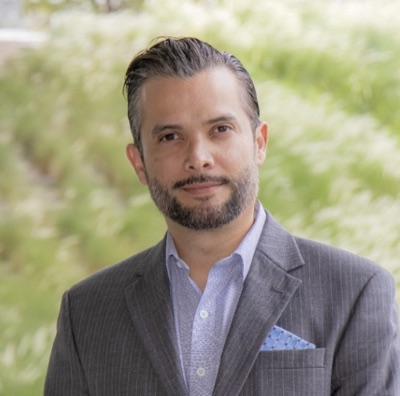
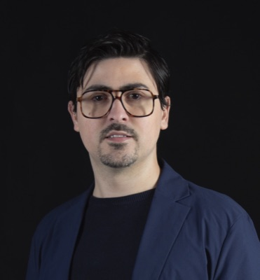
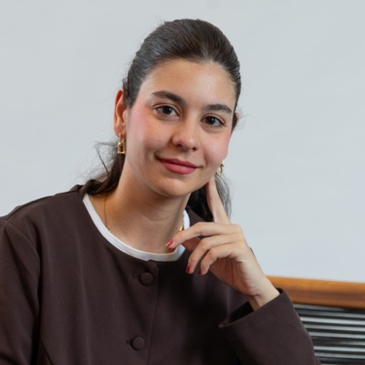
Comité evaluador COMAPROD
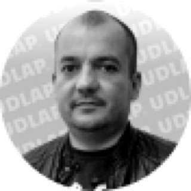
Profesorado
Profesores de la Licenciatura
Profesores de planta y de asignatura de la Licenciatura. Las tarjetas con liga abren el perfil publicado por el Centro Roberto Garza Sada.
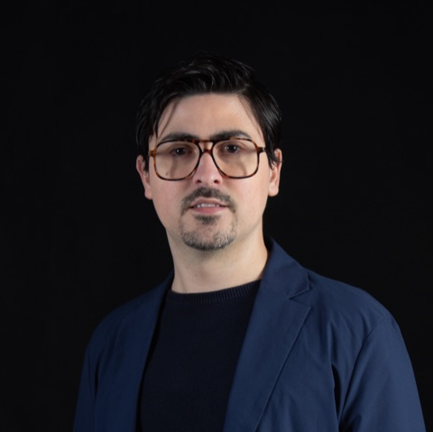
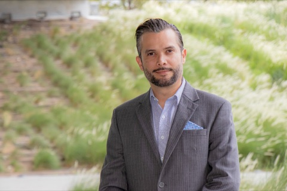
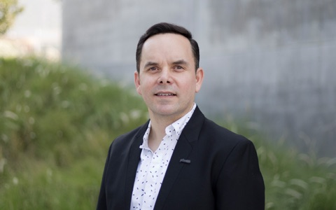
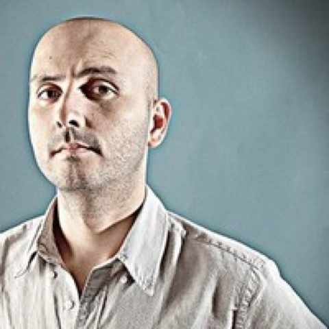
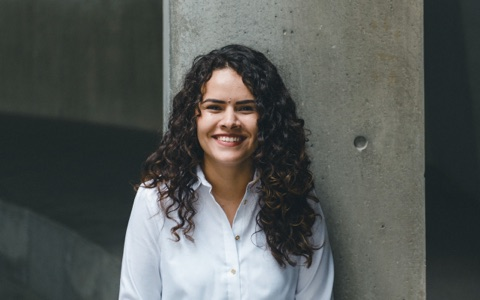
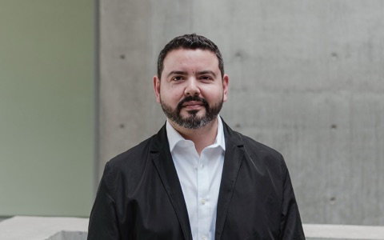
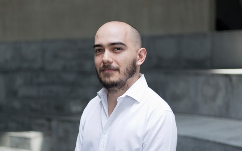
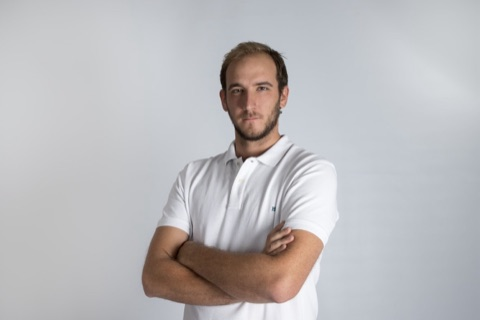
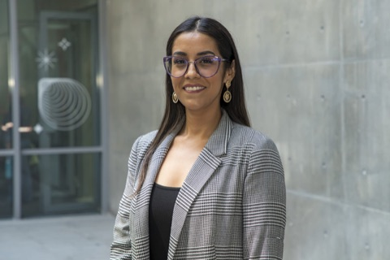
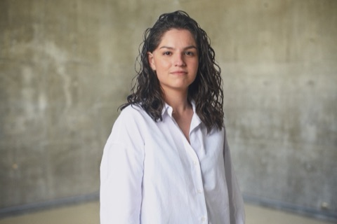
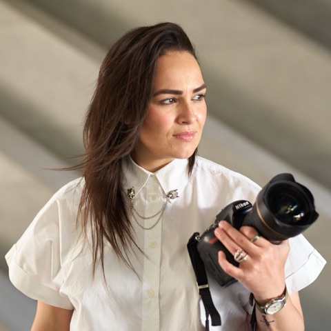